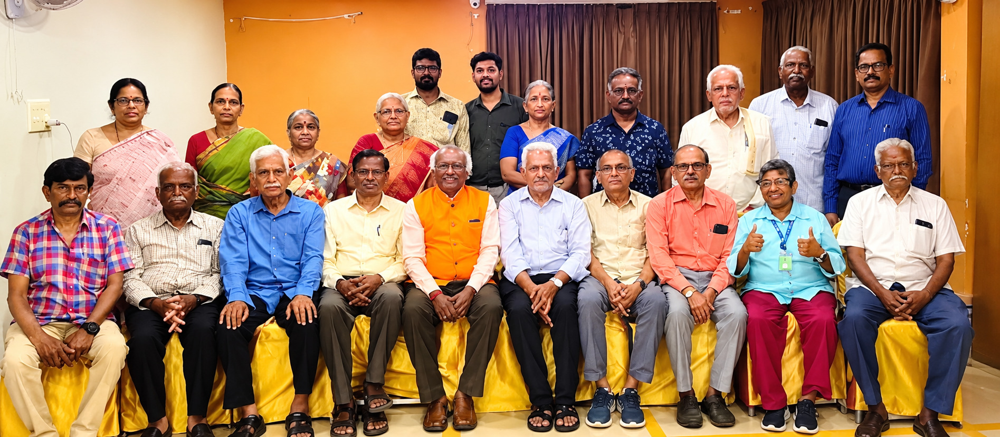
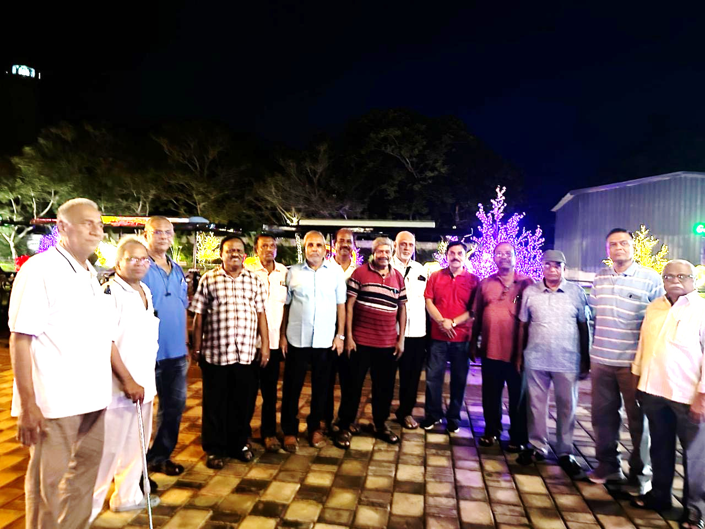
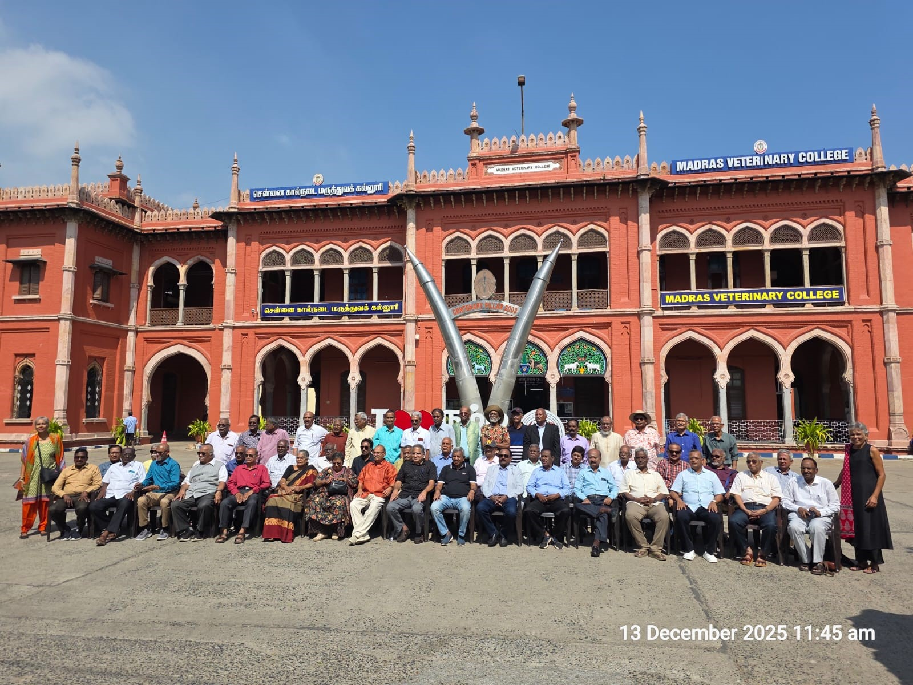
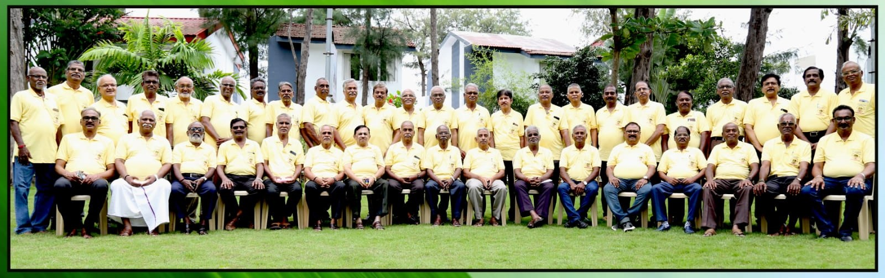
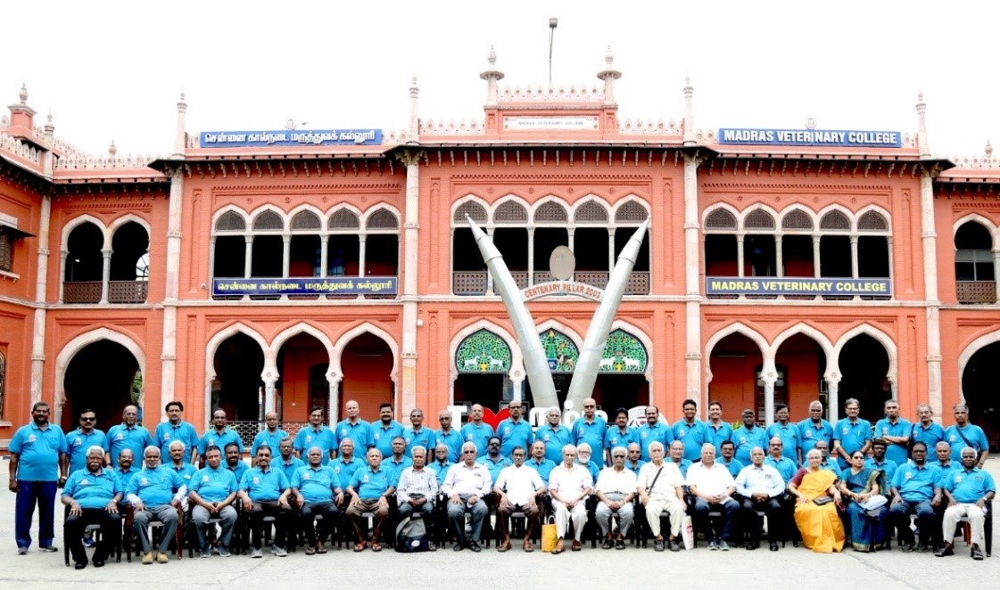
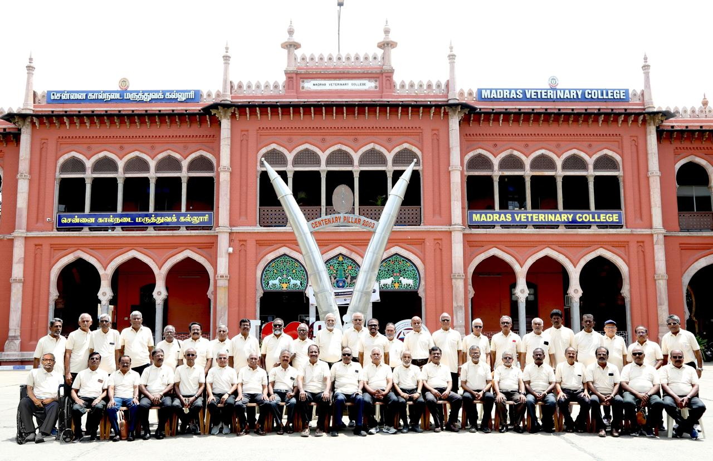
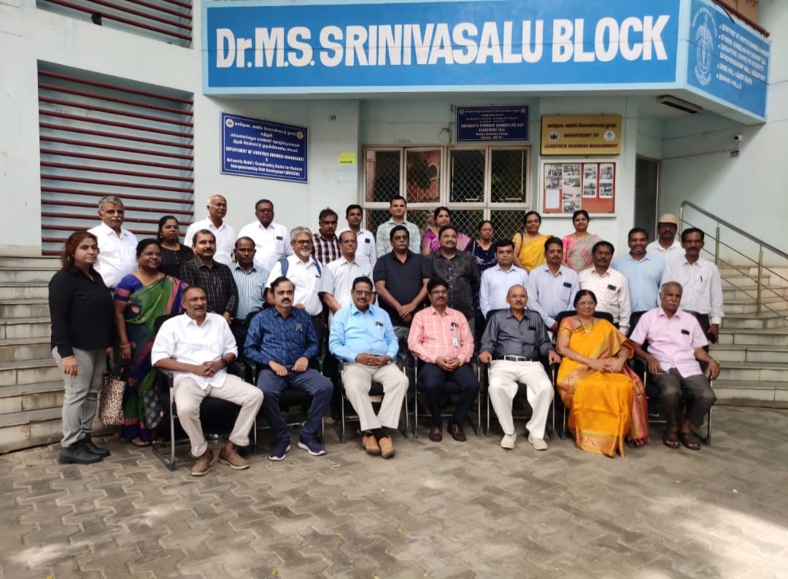

Select a batch to explore its reunions in chronological order. Each collection preserves the complete group photographs and identifies the TTPA members featured in them.

Madras Veterinary College 1969 Batch
Explore the Palakkad families' get-together and Thanjavur devotional reunion.
View 1969 Batch Reunions →
Madras Veterinary College 1972 Batch
View the batch's fifty-fourth-year reunion held at Mahabalipuram in August 2026.
View 1972 Batch Reunion →
Madras Veterinary College 1973 Batch
Explore the Chippiparai statue installation gathering and Mahabalipuram reunion.
View 1973 Batch Reunions →
Madras Veterinary College 1974 Batch
Explore reunions held from 2011 onwards and the felicitation of Padma Shri Dr. N. Punniamurthy.
View 1974 Batch Reunions →
Madras Veterinary College 1975 Batch
Explore reunions held from 2010 onwards, including Kodaikanal, Udhagamandalam, Thekkady, Anaikatti and Chennai.
View 1975 Batch Reunions →
Madras Veterinary College 1976 Batch
View the Golden Jubilee reunion held at Madras Veterinary College and Mahabalipuram.
View 1976 Batch Reunion →
Dairy Fraternity Gatherings
Reconnecting Dairy Science faculty, former students and professional colleagues.
View Dairy Fraternity Gatherings →